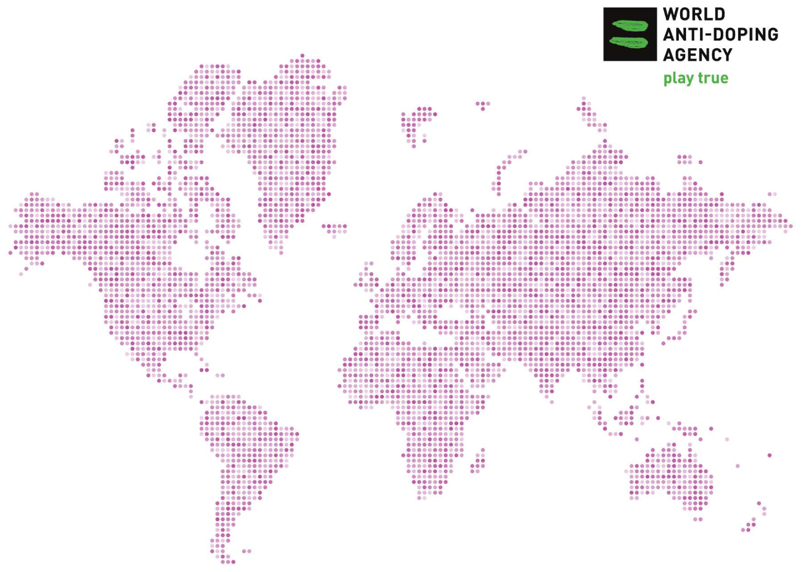

International Standards · ISE
Edition 2021 · effective 1 January 2021 · superseded
Retrieved on 25 November 2026 from https://www.wada-ama.org/sites/default/files/resources/files/international_standard_ise_2021.pdf
Editions: 2027 (current) · 2021
p. 1
International Standard for Education

ISE - January 2021
Page 1 of 19
p. 2
The World Anti-Doping Code International Standard for Education is a mandatory International Standard developed as part of the World Anti-Doping Program. It was developed in consultation with Signatories, public authorities, and other relevant stakeholders.
The International Standard for Education was first adopted and approved by the WADA Executive Committee at the Fifth World Conference on Doping in Sport in in Katowice on 7 November 2019 and is effective as of 1 January 2021.
Published by:
World Anti-Doping Agency Stock Exchange Tower 800 Place Victoria (Suite 1700) PO Box 120 Montreal, Quebec Canada H4Z 1B7
www.wada-ama.org
Tel:
+1 514 904 9232
Fax:
+1 514 904 8650
E-mail: code@wada-ama.org
p. 3
p. 4
PART ONE: INTRODUCTION, CODE PROVISIONS, INTERNATIONAL STANDARD PROVISIONS AND DEFINITIONS
1.0 Introduction and Scope
The International Standard for Education is a mandatory International Standard developed as part of the World Anti-Doping Program.
The overall guiding purpose of the International Standard for Education is to support the preservation of the spirit of sport as outlined in the Code and to help foster a clean sport environment. It is recognized that the vast majority of Athletes wish to compete clean, have no intention to Use Prohibited Substances or Methods and have the right to a level playing field.
Education, as one Prevention strategy highlighted in the Code, seeks to promote behavior in line with the values of clean sport and to help prevent Athletes and other Persons from doping. A key underpinning principle of the International Standard for Education is that an Athlete's first experience with anti-doping should be through Education rather than Doping Control.
The International Standard for Education has three (3) main objectives in support of this purpose.
The first objective is to establish mandatory standards which support Signatories in the planning, implementation, monitoring and evaluation of effective Education Programs as stipulated in Code Article 18. The Code, International Standard for Education and Guidelines for Education will be aligned in such a manner that the Code will outline the framework for Education, the International Standard for Education will set out the principles and minimum standards that Education Programs shall include, while the Guidelines for Education will aid Signatories to develop and improve their Education Program.
The second objective of the International Standard for Education is to provide:
a) Definitions of terminology in the Education field.
b) Clarity on roles and responsibilities for all Signatories responsible for planning, implementing, monitoring and evaluating Education Programs.
The third objective of the International Standard for Education is to help Signatories maximize the use of their resources by:
a) Requiring Signatories to establish an Education Pool that shall at a minimum, include Athletes in the Registered Testing Pool and Athletes returning from a sanction.
b) Encouraging Signatories to cooperate with others and coordinate their Education activities to minimize duplication.
c) Encouraging Signatories to consider the benefits of educating a wider population through Values-Based Education programs to instill the spirit of sport and foster a clean sport environment.
d) Encouraging Signatories to engage and leverage the resources and expertise of others, including governments, researchers and educational institutions.
p. 5
2.0 Code Provisions
The following articles in the 2021 Code are directly relevant to the International Standard for Education; they can be obtained by referring to the Code itself:
- Introduction
- Code Article 18 Education
- Code Article 20 Additional Roles and Responsibilities of Signatories and WADA
- Code Article 21 Additional Roles and Responsibilities of Athletes and other Persons
3.0 Definitions and Interpretation
3.1 Defined terms from the 2021 Code that are used in the International Standard for Education
ADAMS: The Anti-Doping Administration and Management System is a Web-based database management tool for data entry, storage, sharing, and reporting, designed to assist stakeholders and WADA in their anti-doping operations in conjunction with data protection legislation.
Anti-Doping Organization: WADA or a Signatory that is responsible for adopting rules for initiating, implementing or enforcing any part of the Doping Control process. This includes, for example, the International Olympic Committee, the International Paralympic Committee, other Major Event Organizations that conduct Testing at their Events, International Federations, and National Anti-Doping Organizations.
Athlete: Any Person who competes in sport at the international level (as defined by each International Federation) or the national level (as defined by each National Anti-Doping Organization). An Anti-Doping Organization has discretion to apply anti-doping rules to an Athlete who is neither an International-Level Athlete nor a National-Level Athlete, and thus to bring them within the definition of "Athlete". In relation to Athletes who are neither International-Level nor National-Level Athletes, an Anti-Doping Organization may elect to: conduct limited Testing or no Testing at all; analyze Samples for less than the full menu of Prohibited Substances; require limited or no whereabouts information; or not require advance TUEs. However, if an Article 2.1, 2.3 or 2.5 anti-doping rule violation is committed by any Athlete over whom an Anti-Doping Organization has elected to exercise its authority to test and who competes below the international or national level, then the Consequences set forth in the Code must be applied. For purposes of Article 2.8 and Article 2.9 and for purposes of anti-doping information and Education, any Person who participates in sport under the authority of any Signatory, government, or other sports organization accepting the Code is an Athlete.
[Comment to Athlete: Individuals who participate in sport may fall in one of five categories: 1) International-Level Athlete, 2) National-Level Athlete, 3) individuals who are not International or National-Level Athletes but over whom the International Federation or National Anti-Doping Organization has chosen to exercise authority, 4) Recreational Athlete, and 5) individuals over whom no International Federation or National Anti-Doping Organization has, or has chosen to, exercise authority. All International and National-Level Athletes are subject to the anti-doping rules of the Code, with the precise definitions of international and national level sport to be set forth in the anti-doping rules of the International Federations and National Anti-Doping Organizations.]
p. 6
Athlete Biological Passport: The program and methods of gathering and collating data as described in the International Standard for Testing and Investigations and International Standard for Laboratories.
Athlete Support Personnel: Any coach, trainer, manager, agent, team staff, official, medical, paramedical personnel, parent or any other Person working with, treating or assisting an Athlete participating in or preparing for sports Competition.
Code: The World Anti-Doping Code.
Competition: A single race, match, game or singular sport contest. For example, a basketball game or the finals of the Olympic 100-meter race in athletics. For stage races and other sport contests where prizes are awarded on a daily or other interim basis the distinction between a Competition and an Event will be as provided in the rules of the applicable International Federation.
Doping Control: All steps and processes from test distribution planning through to ultimate disposition of any appeal and the enforcement of Consequences, including all steps and processes in between, including but not limited to, Testing, investigations, whereabouts, TUEs, Sample collection and handling, laboratory analysis, Results Management, and investigations or proceedings relating to violations of Article 10.14 (Status During Ineligibility or Provisional Suspension).
Education: The process of learning to instill values and develop behaviors that foster and protect the spirit of sport, and to prevent intentional and unintentional doping.
Event: A series of individual Competitions conducted together under one ruling body (e.g., the Olympic Games, World Championships of an International Federation, or Pan American Games).
Event Venues: Those venues so designated by the ruling body for the Event.
International Event: An Event or Competition where the International Olympic Committee, the International Paralympic Committee, an International Federation, a Major Event Organization, or another international sport organization is the ruling body for the Event or appoints the technical officials for the Event.
International-Level Athlete: Athletes who compete in sport at the international level, as defined by each International Federation, consistent with the International Standard for Testing and Investigations.
[Comment: Consistent with the International Standard for Testing and Investigations, the International Federation is free to determine the criteria it will use to classify Athletes as International-Level Athletes, e.g., by ranking, by participation in particular International Events, by type of license, etc. However, it must publish those criteria in clear and concise form, so that Athletes are able to ascertain quickly and easily when they will become classified as International-Level Athletes. For example, if the criteria include participation in certain International Events, then the International Federation must publish a list of those International Events.]
p. 7
International Standard: A standard adopted by WADA in support of the Code. Compliance with an International Standard (as opposed to another alternative standard, practice or procedure) shall be sufficient to conclude that the procedures addressed by the International Standard were performed properly. International Standards shall include any Technical Documents issued pursuant to the International Standard.
Major Event Organizations: The continental associations of National Olympic Committees and other international multisport organizations that function as the ruling body for any continental, regional or other International Event.
Minor: A natural Person who has not reached the age of eighteen years.
National Anti-Doping Organization: The entity(ies) designated by each country as possessing the primary authority and responsibility to adopt and implement anti-doping rules, direct the collection of Samples, manage test results and conduct Results Management at the national level. If this designation has not been made by the competent public authority(ies), the entity shall be the country's National Olympic Committee or its designee.
National Event: A sport Event or Competition involving International- or National-Level Athletes that is not an International Event.
National-Level Athlete: Athletes who compete in sport at the national level, as defined by each National Anti-Doping Organization, consistent with the International Standard for Testing and Investigations.
National Olympic Committee: The organization recognized by the International Olympic Committee. The term National Olympic Committee shall also include the National Sport Confederation in those countries where the National Sport Confederation assumes typical National Olympic Committee responsibilities in the anti-doping area.
Person: A natural Person or an organization or other entity.
Regional Anti-Doping Organization: A regional entity designated by member countries to coordinate and manage delegated areas of their national anti-doping programs, which may include the adoption and implementation of anti-doping rules, the planning and collection of Samples, the management of results, the review of TUEs, the conduct of hearings, and the conduct of Education programs at a regional level.
Registered Testing Pool: The pool of highest-priority Athletes established separately at the international level by International Federations and at the national level by National Anti-Doping Organizations, who are subject to focused In-Competition and Out-of-Competition Testing as part of that International Federation's or National Anti-Doping Organization's test distribution plan and therefore are required to provide whereabouts information as provided in Article 5.5 and the International Standard for Testing and Investigations.
p. 8
Signatories: Those entities accepting the Code and agreeing to implement the Code, as provided in Article 23.
Strict Liability: The rule which provides that under Article 2.1 and Article 2.2, it is not necessary that intent, Fault, negligence, or knowing Use on the Athlete's part be demonstrated by the Anti-Doping Organization in order to establish an anti-doping rule violation.
Testing: The parts of the Doping Control process involving test distribution planning, Sample collection, Sample handling, and Sample transport to the laboratory.
Therapeutic Use Exemption (TUE): A Therapeutic Use Exemption allows an Athlete with a medical condition to use a Prohibited Substance or Prohibited Method, but only if the conditions set out in Article 4.4 and the International Standard for Therapeutic Use Exemptions are met.
WADA: The World Anti-Doping Agency.
3.2 Defined terms from the International Standard for Code Compliance
Code Compliance: Compliance with all of the requirements in the Code and/or the International Standards that apply to the Signatory in question, as well as with any special requirements imposed by the WADA Executive Committee in accordance with Article A.3(r)."
3.3 Defined terms specific to the International Standard for Education
Anti-Doping Education: Delivering training on anti-doping topics to build competencies in clean sport behaviors and make informed decisions.
Awareness Raising: Highlighting topics and issues related to clean sport.
Education Plan: A document that includes: a situation assessment; identification of an Education Pool; objectives; Education activities and monitoring procedures as required by Article 4.
Education Pool: A list of target groups identified through a system assessment process.
Education Program: A collection of Education activities undertaken by a Signatory to achieve the intended learning objectives.
Educator: A person who has been trained to deliver Education and is authorized by a Signatory for this purpose.
Event-Based Education: Any type of Education activity which takes place at or in association with an Event.
Guidelines for Education: A non-mandatory document in the World Anti-Doping Program that provides guidance on Education and is made available to Signatories by WADA.
p. 9
Information Provision: Making available accurate, up to date content related to clean sport.
Prevention: Refers to interventions undertaken to stop doping from occurring. There are four key interrelated strategies to Prevention: Education; deterrence; detection; and enforcement.
Values-Based Education: Delivering activities that emphasize the development of an individual's personal values and principles. It builds the learner's capacity to make decisions to behave ethically.
3.4 Interpretation
3.4.1 The official text of the International Standard for Education shall be published in English and French. In the event of any conflict between the English and French versions, the English version shall prevail.
3.4.2 Like the Code, the International Standard for Education has been drafted giving consideration to the principles of proportionality, human rights, and other applicable legal principles. It shall be interpreted and applied in that light.
3.4.3 The comments annotating various provisions of the International Standard for Education shall be used to guide its interpretation.
3.4.4 Unless otherwise specified, references to Sections and Articles are references to Sections and Articles of the International Standard for Education.
p. 10
PART TWO: STANDARDS FOR EDUCATION
Overview
Code Article 18.1 requires Signatories to plan, implement, monitor and evaluate Education Programs. Articles 4, 5 and 6 describe the requirements of Signatories related to these mandatory activities.
Signatories should take into consideration cultural and sport contexts and the needs of the learners when developing Education Programs.
Signatories shall develop and deliver an Education Program that incorporates the following four components:
- Values-Based Education: Delivering activities that emphasize the development of an individual's personal values and principles. It builds the learner's capacity to make decisions to behave ethically.
- Awareness Raising: Highlighting topics and issues related to clean sport.
- Information Provision: Making available accurate, up to date content related to clean sport.
- Anti-Doping Education: Delivering training on anti-doping topics to build competencies in clean sport behaviors and make informed decisions.
All components should be aligned in the Education Program. All activities should be complementary, underpinned by values, and foster and protect the spirit of sport.
Signatories should reflect on the role of Education in their organization and be clear on their vision and the ultimate outcome they would like to see from their Education Program. This vision and outcome should inform the objectives that are set out in the Education Plan.
4.0 Planning an Education Program
Education Programs should be evidence based, informed by Education theory, and where possible, informed by social science research.
4.1 Developing an Education Plan
4.1.1 Signatories shall document their Education activities through an Education Plan. The plan shall be provided to WADA and other Signatories upon request with an overview/summary in English or French.
4.1.2 To develop their Education Plan, Signatories shall undertake the following steps: assess the current situation; establish an Education Pool; set clear objectives and related activities; and outline monitoring procedures.
4.2 Assessing the Current Situation
The assessment process shall consider the following:
p. 11
4.2.1 System Assessment: Signatories shall describe the environment within which they operate, including the sports system/structures and the national/international context.
4.2.2 Identification of Target Groups: Signatories shall list all potential target groups for their Education Program, primarily Athletes and Athlete Support Personnel. Signatories shall also identify other agencies/organizations who may be responsible for delivering or have the potential to deliver Education.
4.2.3 Resources: Signatories shall identify human, financial and material resources available or potentially available to support their Education Program.
4.2.4 Current Education Activities: Signatories shall describe all their current Education activities.
4.3 Establishing an Education Pool
4.3.1 From the target groups identified in 4.2.2, Signatories shall determine the priority groups to be included in the Education Pool.
4.3.2 Athletes: Signatories shall consider Athletes, who are subject to their anti-doping rules for inclusion in their Education Pool. At a minimum, Signatories shall include Athletes who are included in their Registered Testing Pool and Athletes returning from a sanction. Signatories are strongly encouraged to ensure their Education Pool includes a broader group of Athletes or provide a rationale for non-inclusion as described in Article 4.3.4. This is to support the principle that an Athlete's first experience with anti-doping should be through Education rather than Doping Control.
4.3.3 Athlete Support Personnel: As per Code Article 21.2, it is the Athlete Support Personnel's responsibility to be knowledgeable of, and comply with all anti-doping policies and rules, and use their influence on Athlete values and behaviors that foster anti-doping attitudes.
Signatories shall consider Athlete Support Personnel of the Athletes identified in Article 4.3.2 for inclusion in the Education Pool. The most influential Athlete Support Personnel should be given priority. Signatories shall, within their means, ensure that Athlete Support Personnel have access to the information required to understand their roles and responsibilities and positively influence their Athletes.
As defined in the Code, the following groups shall be considered as part of this process: coaches, trainers, managers, agents, team staff, officials, medical/paramedical personnel, parents or any other Person working with, treating or assisting an Athlete participating in or preparing for sports Competition.
p. 12
4.3.4 If there are Athletes or Athlete Support Personnel that will not be included in the Education Pool, Signatories shall provide a rationale as to why they have not been included and how this will be addressed in the future.
4.3.5 Other Target Groups: In addition to Athletes and Athlete Support Personnel as described above, other target groups should also be considered as part of the planning process including, but not limited to:
- Children and youth
- Teachers
- University staff and students
- Sport administrators
- Commercial sponsors
- Media personnel
- Any other Persons as deemed necessary by Signatories
4.3.6 Education Pool: After identifying and prioritizing target groups, and based on the resources and capacity to deliver, Signatories shall select those to be included in their Education Pool and document these in their Education Plan.
4.4 Objectives and Activities
The Education Plan shall state the overall aims of the Education Program and list the specific objectives and timelines related to activities for the target groups in the Education Pool. All objectives shall be measurable and time specific.
4.5 Monitoring
The Education Plan shall include monitoring procedures for the activities in the Education Program to aid reporting and evaluation and foster continuous improvement.
5.0 Implementing Education Programs
5.1 Values-Based Education should remain a focus, particularly in children and youth through school and/or sports club programs, and in cooperation with the relevant public authorities and other stakeholders.
5.2 Signatories shall include the following topics in their Education Program as also outlined in Code Article 18.2. Topics and content should be adapted and tailored to meet the needs of the target audience. Information regarding these topics shall be made publicly available:
- Principles and values associated with clean sport,
p. 13
- Athletes', Athlete Support Personnel's and other groups' rights and responsibilities under the Code,
- The principle of Strict Liability,
- Consequences of doping, for example, physical and mental health, social and economic effects, and sanctions,
- Anti-doping rule violations,
- Substances and Methods on the Prohibited List,
- Risks of supplement use,
- Use of medications and Therapeutic Use Exemptions,
- Testing procedures, including urine, blood and the Athlete Biological Passport,
- Requirements of the Registered Testing Pool, including whereabouts and the use of ADAMS,
- Speaking up to share concerns about doping.
5.3 Education on the topics listed in Article 5.2 should be provided for the Registered Testing Pool in full.
5.4 Signatories shall establish a framework that identifies the learning objectives for each target group in the Education Pool. These learning objectives state what the learner should be 'aware of', 'understand' and 'be capable of doing' for each topic. Competencies and skills are what the learner should demonstrate at each stage of their development.
5.5 Signatories shall tailor Education activities to learners with impairments or specific needs within the Education Pool.
5.6 Article 5.5 shall apply also to Minors in the Education Pool ensuring that Education activities are tailored for their stage of development and meet all applicable legal requirements.
5.7 Signatories shall select appropriate Education activities to achieve the objectives of the Education Plan. Delivery methods may include face-to-face sessions, eLearning, brochures, outreach booths, websites, etc., as described in the Guidelines for Education.
5.8 Signatories shall assign Educators who will be responsible for delivering face-to-face Education. Educators should be competent in Values-Based Education and on all topics p. 14 outlined in Code Article 18.2, the International Standard for Education and the Guidelines for Education.
5.9 Signatories should include Athletes in the planning and development of the Education Plan to ensure activities are appropriate for the stage of development of the Athletes. Signatories should consider involving Athletes in the delivery of Education activities where appropriate.
[Comment to Article 5: To assist Signatories, WADA offers a full suite of Education tools to help reach various target groups.]
6.0 Evaluating Education Programs
6.1 Signatories shall evaluate their Education Program annually. The evaluation should inform the following year's Education Plan. The evaluation report shall be provided to WADA upon request with an overview/summary in English or French.
6.2 The evaluation shall be based on all available information and data related to the specific objectives in the Education Plan and determine to what extent these objectives have been met.
6.3 Where possible, Signatories should seek partnerships in the academic field or with other research institutions to provide support for evaluation and research purposes. Social science research can also be used to inform evaluation procedures.
[Comment to Article 6.3: WADA offers social science research evidence to inform both evaluation of programs and design of Education activities.]
p. 15
PART THREE: ROLES & RESPONSIBILITIES, COOPERATION AND ACCOUNTABILITY OF SIGNATORIES
7.0 Roles & Responsibilities of Signatories
7.1 Overview
7.1.1 Code Article 18.1 states that: "All Signatories shall, within their scope of responsibility and in cooperation with each other, plan, implement, monitor and evaluate and promote Education programs in line with the requirements set out in the International Standard for Education."
The objectives of Part Three are:
a) to provide clarity on the primary responsibilities of each Signatory related to Education;
b) to outline how cooperation can minimize duplication and maximize efforts to enhance the effectiveness of Education Programs; and
c) to summarize the requirements of the International Standard for Education upon which Signatories will be held accountable.
7.2 National Anti-Doping Organizations
7.2.1 Each National Anti-Doping Organization shall be the authority on Education as it relates to clean sport within their respective country. National Anti-Doping Organizations should support the principle that an Athlete's first experience with anti-doping should be through Education rather than Doping Control.
7.2.2 Each National Anti-Doping Organization shall devise an Education Program for those under their authority and who are in their Education Pool. National Anti-Doping Organizations shall document an Education Plan to demonstrate how their Education Program will be implemented and monitored. National Anti-Doping Organizations shall evaluate their Education Programs annually.
7.2.3 In addition to the above, National Anti-Doping Organizations may have a role in educating the following:
a) International-Level Athletes in cooperation with the relevant International Federation;
b) Youth Athletes, in cooperation with National Federations; and
c) Children and youth through school and/or sports club programs in cooperation with public authorities, which may include promoting the integration of Values-Based Education into the existing Education or sport system.
p. 16
7.2.4 As per Code Article 20.3.13, International Federations require National Federations to conduct Education in coordination with the applicable National Anti-Doping Organization and as such, shall be engaged as a key partner and supported in this function by the National Anti-Doping Organization.
7.2.5 National Anti-Doping Organizations who are part of the Regional Anti-Doping Organization network shall provide their Education Plan and an overview/summary to their Regional Anti-Doping Organization annually.
7.3 International Federations
7.3.1 Education Programs aimed at International-Level Athletes as determined by their own criteria in reference to Code Article 18.2.3 shall be the priority for International Federations. Each International Federation should support the principle that an Athlete's first experience with anti-doping should be through Education rather than Doping Control.
7.3.2 Each International Federation shall devise an Education Program for those under their authority and who are in their Education Pool. International Federations shall document an Education Plan to demonstrate how their Education Program will be implemented and monitored. International Federations shall evaluate their Education Programs annually.
7.3.3 At International Events where Testing will take place and where they have Testing authority, International Federations shall consider delivering Event-Based Education. This should be done in cooperation with the local National Anti-Doping Organization, or where applicable, with the Regional Anti-Doping Organization, the National Federation and the Major Event Organization. Athletes and their Athlete Support Personnel participating at International Events should receive Education in advance of the Event and in accordance with Article 5.
7.3.4 The International Federation shall require National Federations to conduct Education in cooperation with the applicable National Anti-Doping Organization as per Code Article 20.3.13.
[Comment to Article 7.3: Nothing prevents International Federations from educating non-International-Level Athletes and their Athlete Support Personnel under their authority. International Federations are required to instruct that Event-Based Education programs conducted on their behalf by other Signatories, National Federations or third parties are done in accordance with the requirements set out in the International Standard for Education.]
7.4 Major Event Organizations
7.4.1 Major Event Organizations shall ensure the provision of Education activities at Events that are directly under their authority as per Code Article 20.6.8. Event-Based Education p. 17 has the potential to reach and positively impact wider audiences, including the general public and media.
7.4.2 Major Event Organizations shall consider Event-Based Education at all Events where Testing will take place and where they are the Testing authority. Athletes and Athlete Support Personnel competing and participating at their Events should receive Education prior to the Event. This should be done in cooperation with the local organizing committee*, National Anti-Doping Organization* and relevant International and National Federations.
7.5 National Olympic Committees/National Paralympic Committees
7.5.1 As per Code Article 20.4.6, where a National Anti-Doping Organization does not exist, the National Olympic Committee (or, as applicable, the National Paralympic Committee) shall be the authority on Education in their country subject to Article 7.2.
7.5.2 Where a National Anti-Doping Organization exists, the *National Olympic Committee (*or, as applicable, the National Paralympic Committee) shall cooperate with their National Anti-Doping Organization to ensure that Athletes and Athlete Support Personnel selected to participate in the Olympic/Paralympic Games (or any Event where the National Olympic Committee or, as applicable, the National Paralympic Committee, participates or hosts) shall receive Education in advance of the Event as per Article 5.
7.5.3 The National Olympic Committee (or, as applicable, the National Paralympic Committee) shall require National Federations to conduct Education in coordination with the applicable National Anti-Doping Organization as per Code Article 20.4.12.
7.6 Regional Anti-Doping Organizations
7.6.1 Regional Anti-Doping Organizations shall support their member countries to conduct Education Programs and shall promote Education as per Code Article 21.4.7.
7.6.2 Regional Anti-Doping Organizations shall work with National Anti-Doping Organizations, governments and National Olympic Committees (or, as applicable, the National Paralympic Committee) within their regions to provide support for the coordination and delivery of Education Programs.
7.6.3 Regional Anti-Doping Organizations should be a knowledge center for Education in their region whereby they collect all relevant content and material related to National Anti-Doping Organization Education Programs and make this available for all.
7.7 World Anti-Doping Agency (WADA)
7.7.1 WADA shall support its stakeholders to develop and deliver effective Education Programs in line with the International Standard for Education.
p. 18
7.7.2 WADA shall provide Education materials for use by Signatories or to be used by any other Person directly.
7.7.3 WADA shall be responsible for ensuring compliance with the International Standard for Education and the Code through the Code Compliance process and in line with the International Standard for Code Compliance by Signatories.
8.0 Cooperation with and Recognition of other Signatories
8.1 Signatories shall coordinate their Education efforts to minimize duplication and maximize the effectiveness of their Education Programs. In particular:
a) Signatories shall consult with other relevant Signatories when planning Education activities.
b) Signatories shall agree in advance on roles and responsibilities for Event-Based Education where applicable. This should be done in accordance with the roles and responsibilities outlined in Article 7.
c) Signatories shall share their Education Plans or overview/summary with other relevant Signatories upon request.
8.2 Recognition of Education Programs
8.2.1 Signatories shall acknowledge the Education Programs carried out by other Signatories and may recognize the completion of such programs by learners (in their Education Pool) of said program, provided that the program has been delivered as per Article 5. Where recognition takes place, this should be clearly communicated to other relevant Signatories and the Education Pool. This process should ease the burden on Athletes and Athlete Support Personnel and minimize duplication of Education. It can also help Signatories to prioritize and focus their efforts more effectively and to concentrate on under-served target groups.
9.0 Accountability
9.1 Signatories shall be held accountable via the following:
a) A documented Education Plan that includes:
i. an assessment of the current situation;
ii. the establishment of an Education Pool (including the rationale for any Athletes and Athlete Support Personnel not included and how this will be addressed in the future);
iii. objectives and related activities; and
iv. monitoring procedures.
p. 19
b) The completion of an annual evaluation of the Education Program, including reporting the status of all objectives set out in the Education Plan;
c) The Code Compliance process and associated consequences as outlined in the International Standard for Code Compliance by Signatories.
Retrieved on 25 November 2026 from https://www.wada-ama.org/sites/default/files/resources/files/international_standard_ise_2021.pdf